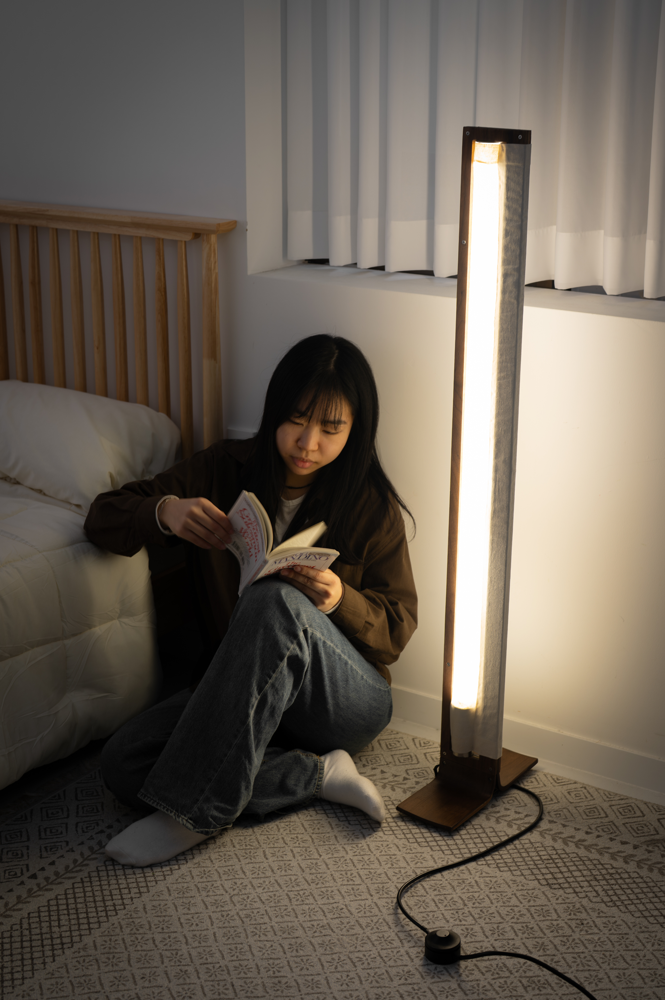

Designer, Hong Yejin
I am an industrial designer based in Korea.
I enjoy observing people's everyday behaviors and am fascinated by the
interesting phenomena that arise from them.
My work involves designing services across various industries to improve
people's lives and build new infrastructure.
